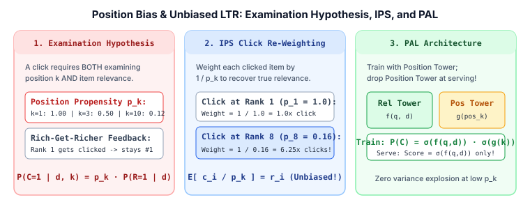

Search, Ranking & Retrieval · Learning to Rank & Multi-Stage Cascade · Chapter 3
3. Position Bias & Unbiased Learning to Rank: Examination Hypothesis, IPS & PAL
Human relevance labels are expensive and quickly go stale, so production rankers train primarily on user click logs. However, clicks are heavily distorted by position bias: an item placed at Rank 1 receives $5\times$–$10\times$ more clicks than the exact same item placed at Rank 8 simply because users scan top-down. Training naively on raw clicks creates a self-reinforcing rich-get-richer loop. This chapter derives the Examination Hypothesis, Inverse Propensity Scoring (IPS), and Position-Bias Aware Learning (PAL).

1. The Examination Hypothesis
For a document $d$ displayed at rank position $k$, let $C \in \{0, 1\}$ denote whether the user clicked $d$, $E \in \{0, 1\}$ denote whether the user actually looked at (examined) slot $k$, and $R \in \{0, 1\}$ denote whether $d$ is truly relevant. The Examination Hypothesis (Richardson et al., 2007) states that a user clicks an item if and only if they both examine slot $k$ and find the item relevant:
$$C = 1 \iff (E = 1 \;\text{and}\; R = 1)$$Assuming examination depends only on rank position $k$ with propensity $p_k = \Pr(E = 1 \mid k)$ and relevance depends only on the query-document pair $(q, d)$, the observed click probability factors cleanly:
$$\Pr(C = 1 \mid q, d, k) = \underbrace{\Pr(E = 1 \mid k)}_{p_k\;\text{(Position Propensity)}} \times \underbrace{\Pr(R = 1 \mid q, d)}_{r_d\;\text{(True Relevance)}}$$Wait—why can't we treat unclicked items ($C = 0$) as definitely irrelevant ($R = 0$)? Because $C = 0$ happens whenever the user stopped scrolling before reaching slot $k$ ($E = 0$), even if $R = 1$!
2. Inverse Propensity Scoring (IPS)
Suppose we know the examination propensity $p_k$ of each slot $k$ (measured via small-bucket RandPair swap experiments, where Rank 1 and Rank $k$ are swapped on $1\%$ of traffic, or via Regression EM). How do we turn biased click indicators $c_d \in \{0, 1\}$ into an unbiased loss over true relevance $r_d \in \{0, 1\}$?
Joachims et al. (2017) introduced Inverse Propensity Scoring (IPS) for Learning to Rank: weight the loss contribution of every clicked document at position $k$ by the inverse of its examination propensity, $w_k = \frac{1}{p_k}$:
$$\hat{\mathcal{L}}_{\text{IPS}} = \sum_{d:\, c_d = 1} \frac{\ell(q, d)}{p_{k(d)}}$$Taking the expectation over random examination $E_d \sim \text{Bernoulli}(p_{k(d)})$ proves that $\hat{\mathcal{L}}_{\text{IPS}}$ is an exact unbiased estimator of the ideal full-information loss over truly relevant items:
$$\mathbb{E}_{E}\!\left[\hat{\mathcal{L}}_{\text{IPS}}\right] = \sum_{d} \mathbb{E}_E\!\left[\frac{c_d}{p_{k(d)}}\right] \ell(q, d) = \sum_{d} \frac{p_{k(d)} \cdot r_d}{p_{k(d)}} \ell(q, d) = \sum_{d} r_d \cdot \ell(q, d)$$Propensity Clipping: If slot $k = 50$ has a tiny propensity $p_{50} = 0.005$, a single accidental click gets multiplied by $1 / 0.005 = 200$, causing huge gradient variance. Production systems clip propensities at a floor $\tau$ (e.g., $\tilde{p}_k = \max(p_k, 0.05)$), trading a small bias for a massive reduction in variance.
3. PAL: Position-Bias Aware Learning (Adding Position as a Feature Safely)
In deep neural CTR and feed rankers (Huawei PAL, Guo et al., 2019; YouTube Watch-Time rankers), engineers prefer an end-to-end neural alternative to IPS called Position-Bias Aware Learning (PAL):
- Why naive position features fail: If you feed
position_kas a regular input feature into a single MLP alongside query and document features, the network mixes them non-linearly, and you don't know what value ofposition_kto pass at serving time (when positions aren't assigned yet!). - The Two-Tower PAL Solution: Split the network into two additive/multiplicative towers: a Relevance Tower $f_\theta(q, d)$ that sees only query/item/user features, and a Position Tower $g_\phi(k, \text{device})$ that sees only display position $k$ and UI context:
- Training: Train both towers jointly on logged clicks $(q, d, k, c)$ using standard binary cross-entropy.
- Serving: Discard the Position Tower $g_\phi$ completely and rank all candidates using only the Relevance Tower $\sigma(f_\theta(q, d))$ (or set $k = 1$ uniformly for every candidate).
4. Worked Numerical Example: Raw CTR vs. IPS-Debiased Relevance
Suppose two documents—Doc A (shown exclusively at Rank 1, where $p_1 = 1.0$) and Doc B (shown exclusively at Rank 5, where $p_5 = 0.25$)—each receive $1{,}000$ impressions in our search logs:
| Document | Displayed Rank $k$ | Propensity $p_k$ | Impressions | Observed Clicks | Raw Observed CTR | IPS-Debiased Relevance $\hat{r}_d = \frac{\text{CTR}}{p_k}$ |
|---|---|---|---|---|---|---|
| Doc A (Mediocre incumbent) | Rank $1$ | $1.00$ | $1{,}000$ | $180$ | $18.0\%$ (Looks #1) | $0.180 / 1.00 = \mathbf{18.0\%}$ (Rank 2) |
| Doc B (Buried gem) | Rank $5$ | $0.25$ | $1{,}000$ | $80$ | $8.0\%$ (Looks #2) | $0.080 / 0.25 = \mathbf{32.0\%}$ (True #1!) |
A naive ranker trained on raw clicks sees $18.0\% > 8.0\%$ and permanently locks Doc A at Rank 1. IPS recognizes that each of Doc B's $80$ clicks at Rank 5 ($p_5 = 0.25$) represents $1 / 0.25 = 4$ virtual clicks had everyone examined Rank 5 ($80 \times 4 = 320$ effective clicks $\Rightarrow 32.0\%$ true relevance), promoting Doc B above Doc A.
5. Minimal PyTorch Implementation: IPS Loss & PAL Ranker
import torch
import torch.nn as nn
import torch.nn.functional as F
def ips_weighted_bce(logits: torch.Tensor, clicks: torch.Tensor, propensities: torch.Tensor, clip: float = 0.05) -> torch.Tensor:
"""Inverse Propensity Scored BCE with propensity clipping."""
safe_p = torch.clamp(propensities, min=clip)
weights = torch.where(clicks > 0, 1.0 / safe_p, torch.ones_like(safe_p))
raw_loss = F.binary_cross_entropy_with_logits(logits, clicks, reduction="none")
return torch.mean(weights * raw_loss)
class PALRanker(nn.Module):
def __init__(self, num_features: int, max_positions: int = 20):
super().__init__()
self.relevance_tower = nn.Sequential(nn.Linear(num_features, 32), nn.ReLU(), nn.Linear(32, 1))
self.position_tower = nn.Embedding(max_positions + 1, 1)
def forward(self, x: torch.Tensor, pos_k: torch.Tensor | None = None) -> torch.Tensor:
rel_prob = torch.sigmoid(self.relevance_tower(x)).squeeze(-1)
if not self.training or pos_k is None:
# At serving time, return position-free relevance score!
return rel_prob
pos_prob = torch.sigmoid(self.position_tower(pos_k)).squeeze(-1)
return rel_prob * pos_prob
# Demo
model = PALRanker(num_features=16)
x = torch.randn(8, 16)
pos = torch.tensor([1, 2, 3, 4, 5, 6, 7, 8])
model.train()
train_click_probs = model(x, pos)
model.eval()
serve_rel_scores = model(x) # Position-independent!
print("Train click probs:", train_click_probs[:3].detach().numpy().round(3))
print("Serve rel scores: ", serve_rel_scores[:3].detach().numpy().round(3))